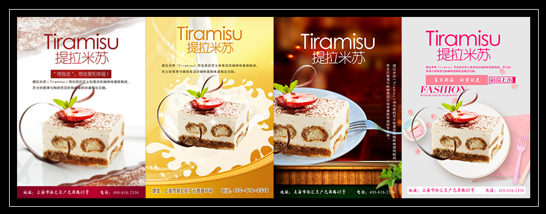
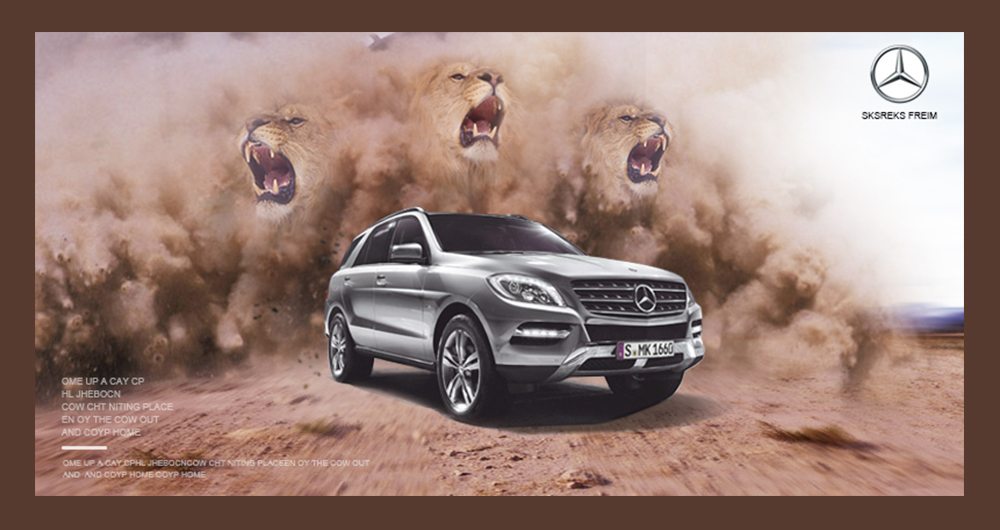
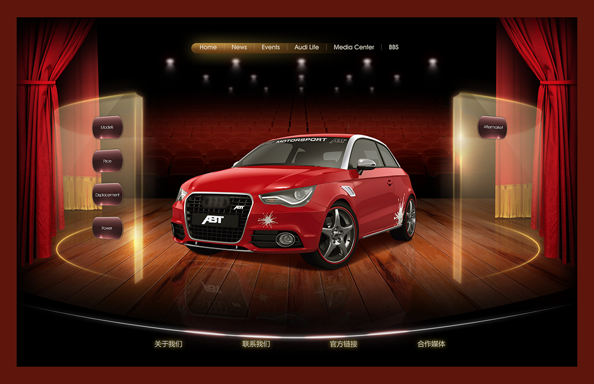
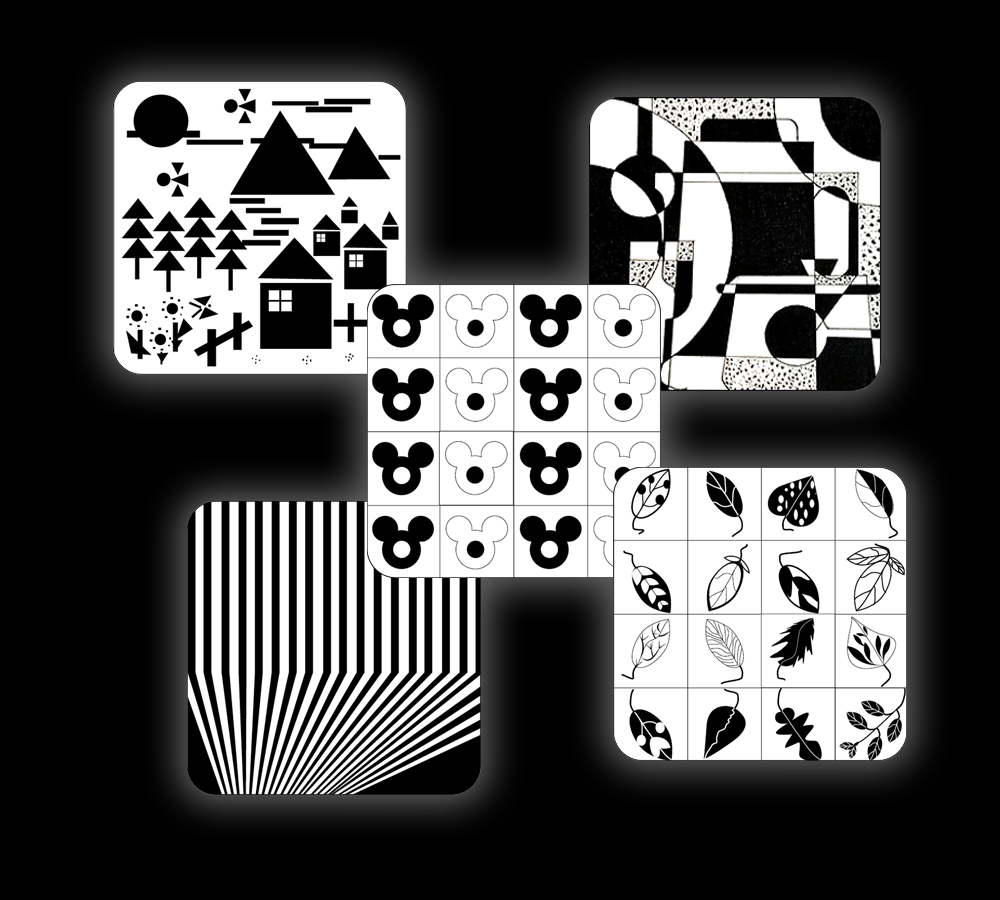
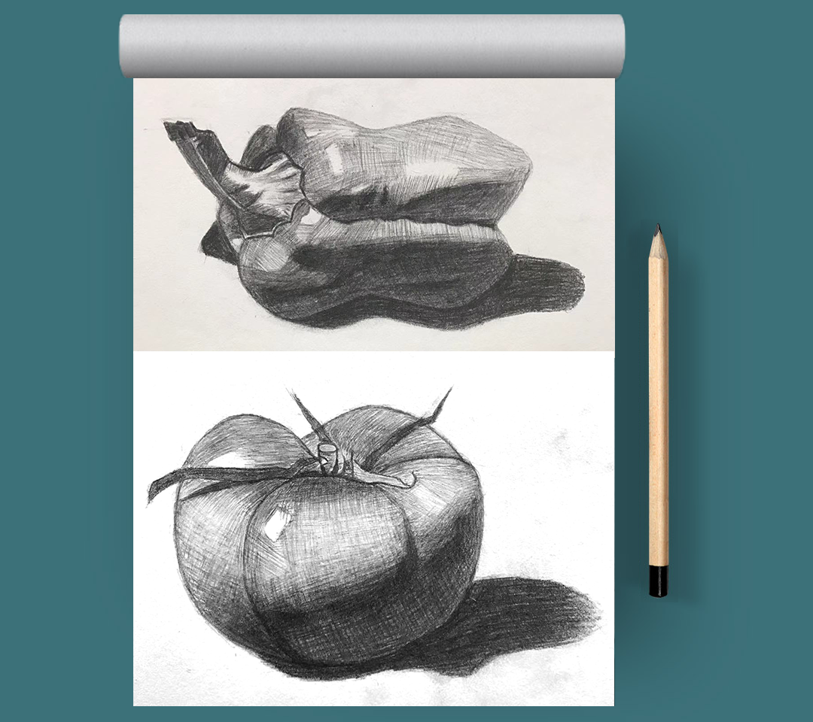
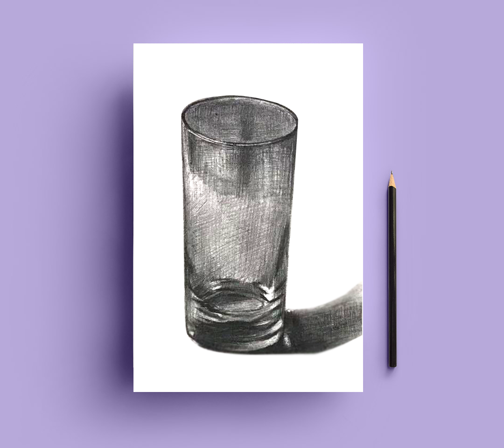
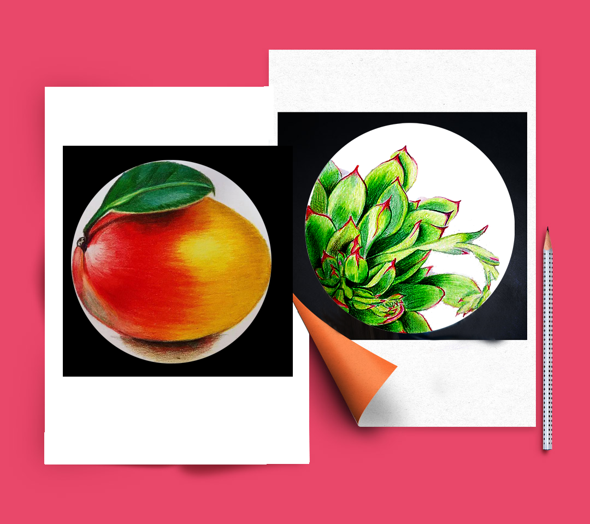

唐仕礼
Welcome to my resume
13587796633
13587796633
360585572

我是唐仕礼，来自贵州平塘，大专在籍，web全栈，擅长ps设计、平面设计、H5+css，懂js及前端开发，热爱设计和互联网技术...
设计能力
My skills 85%
PS设计
85%
H5
70%
AI
70%
FW
85%
PS设计
85%
H5+CSS
70%
AI
70%
FW
开发能力
Web development Skills 50%
前端开发
80%
H5+CSS
60%
JS
75%
H5
50%
前端开发
80%
H5+CSS
60%
JS
85%
H5
具备一定的WEB前端和H5方面的开发能力，可将设计文件快速转换成WEB代码并能做到99%还原度…………
岗位匹配
Job Matching 80%
美工
50%
前端开发
85%
H5+CSS
设计作品
Design Works以下是我的部分练习作品，包含AI设计、PS设计……





手绘作品
Hand Drawings 


BANNER作品
Photoshop